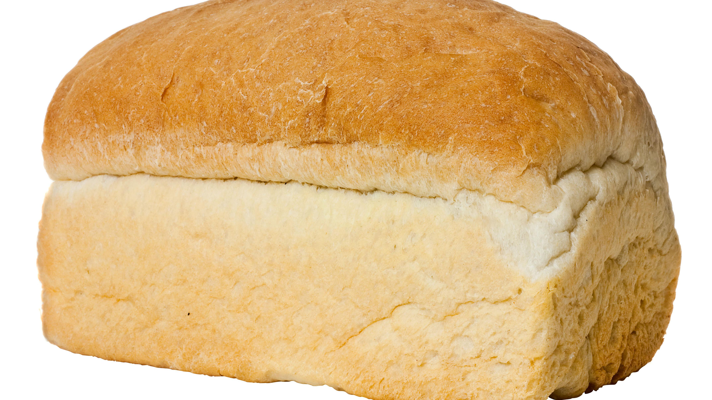

Knux's Stuff
Pretend the old, cool HTML5 canvas site didn't get destroyed by a chrome update
Stuff I do:
- C++/C programming
- Hardware Tinkering
- Random Misc coding assignments
- Rom Hacking and other Game Design prospects
- VR related stuff
- Fun website experiments
Programming Languages I know (in literally no order):
- C++/C
- C#
- Java
- Javascript
- HTML/CSS
- Python
- GML
- Unix Shell
- 6502 ASM (mostly for SNES purposes)
Projects I'm really proud of (in literally no order):
- UIL-API: Complete reimplementation of the UIL scores website into an API
- Knuxfan's Tetriminos: My own hand-made version of Tetris, entirely coded in C++ using the SDL2 library. My first "big" game that wasn't built in a pre-existing engine.
- Knuxfan Spelling: Fun little browser-based spelling bee game. Made for a friend in less than 24 hours!
- Knuxfan Radio: A visualizer for PulseAudio based systems that was intended to be expanded into a car radio. Unfortunately, the great global chip shortage kinda killed those dreams.
- Chip8Deluxe: A mostly completed emulator of the somewhat real computer, Chip8! This was my first experiment with Chip8 emulation, with my next goal being Gameboy Emulation some day in the future.
- 3D Sus Cube: Joke that might've gone too far. But WebGL was fun to play with!
- FalconDance: Basically 3D Sus Cube but funnier. But threejs was fun to play with!
- Breaking Castle Wolfenstein (Alternate Title: DOOM but it's in Los Pollos Hermanos from Breaking Bad): Walter White themed Wolf3D clone that got too serious. Still working on this project!
- Tree Fractal Experiment: My first C++ project! I never ported this one to Makefile, so it won't compile under Linux but I was ultimately really proud of this project
Projects I've helped run/taught:
Social Media and Rom Hacks:
bread